SUI & ON. / OUTING
Little trips.
ふたりと、どこへ行こう。
雨の日も、晴れの日も。
おでかけする日、おうちで遊ぶ日。今日の楽しみを見つけよう。
気分から、特集を読む。
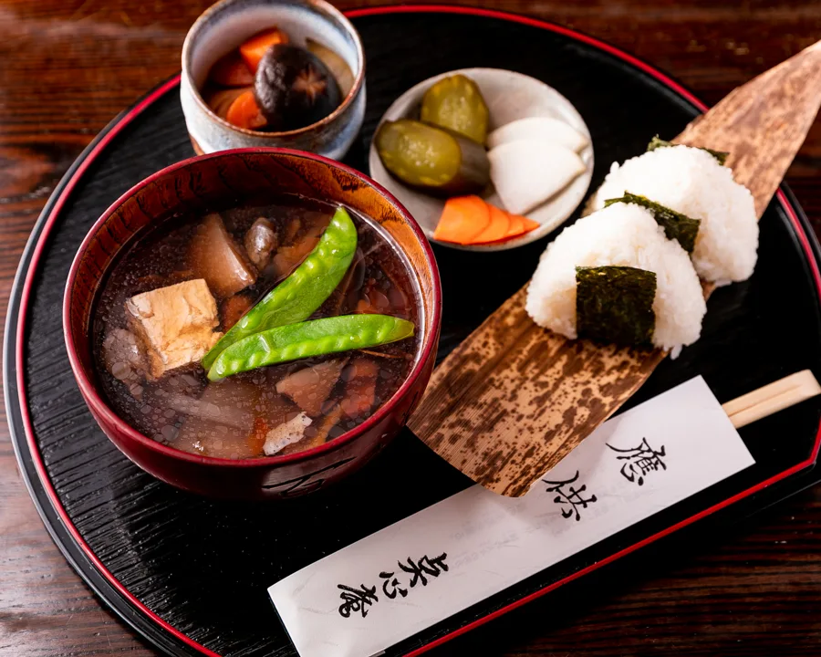
点心庵｜犬とごはん
建長寺ゆかりのけんちん汁や、鎌倉の食材を使う食事。愛犬と、落ち着いた和食の時間を過ごしたい日に。
特集を読む →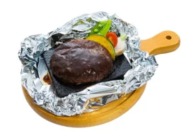
Les deux Bleue レドゥブルー｜犬とごはん
黒毛和牛の石焼ハンバーグやアップルパイを案内するドッグカフェ。豊洲のお散歩と食事を組み合わせたい日に。
特集を読む →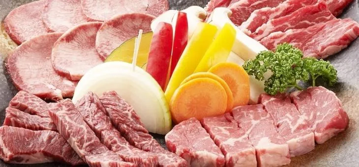
肉菜工房うしすけ 台場店｜犬とごはん
お肉と野菜を囲んで、しっかりごはん。お台場散歩のあとに、犬と同じ店内で焼肉を楽しめる一軒です。
特集を読む →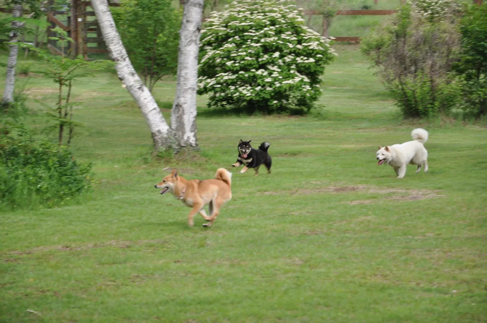
長野・山梨で、深呼吸。｜ドッグラン5選
八ヶ岳自然文化園内のドッグラン。高原の公園散策と合わせて楽しめます。標高が高いので防寒の準備も。
特集を読む →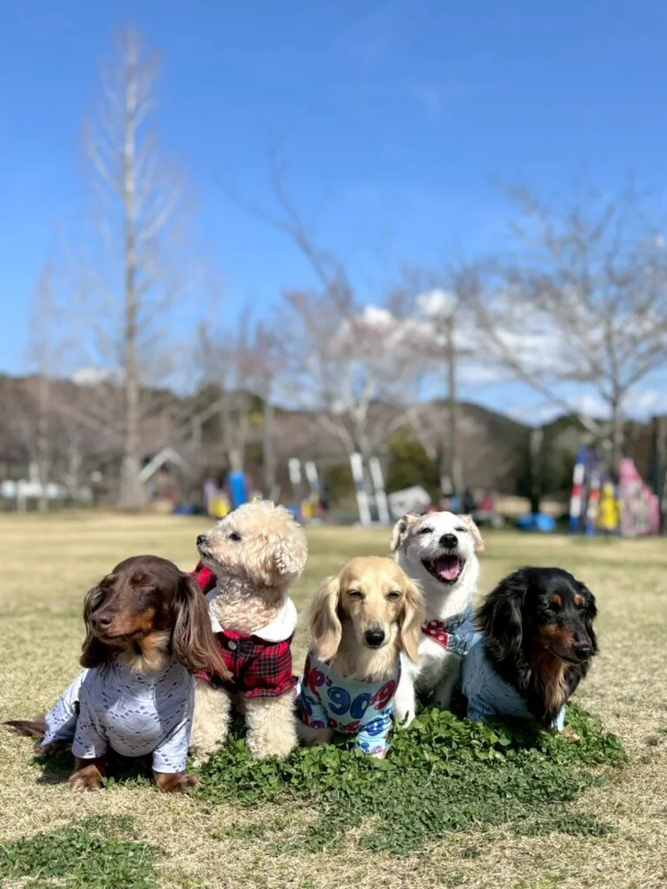
東海で、次の遊び場。｜ドッグラン5選
犬のサイズや用途に合わせた複数のエリアがあるドッグラン。スポーツエリアは通常のランと利用条件が異なります。
特集を読む →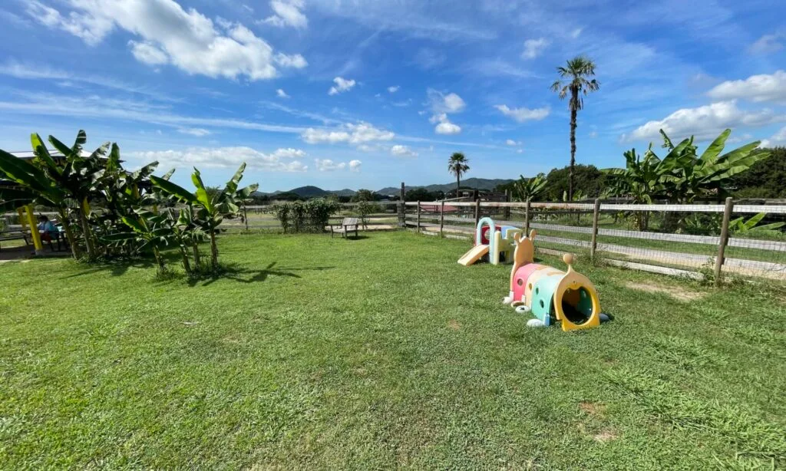
兵庫で、走る休日。｜ドッグラン5選
小型犬専用サイトもある屋外施設。体格やその日の混雑を見ながら、愛犬に合う場所を選んで遊べます。
特集を読む →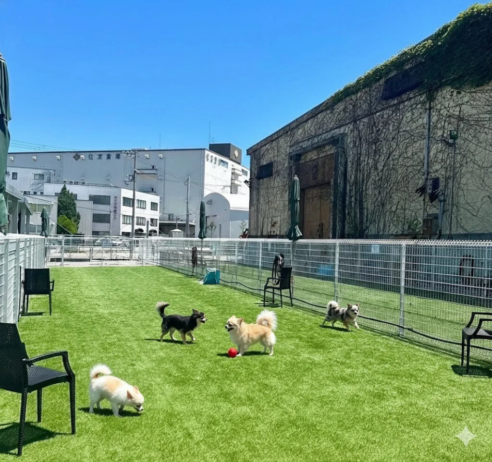
大阪・京都のランを探そう。｜ドッグラン5選
海遊館近くにある貸切ドッグラン。ほかの犬と一緒のランが苦手な子も、自分たちのペースで過ごす候補に。
特集を読む →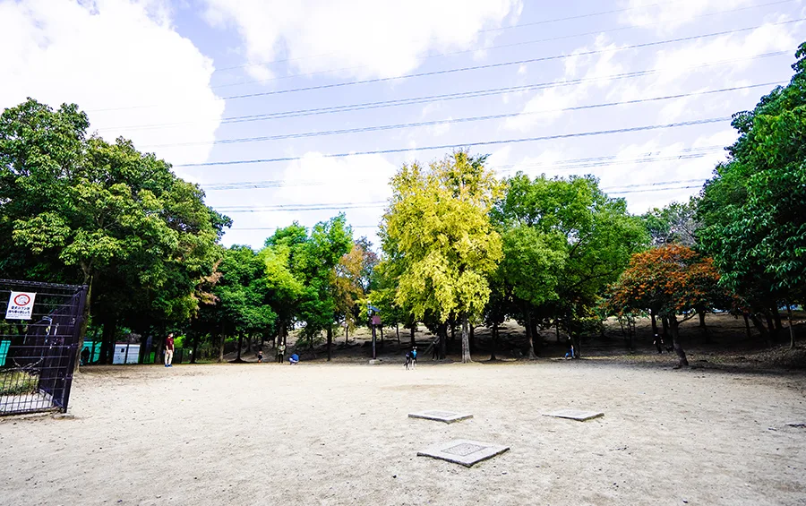
大阪で、外遊び。｜ドッグラン5選
公園の中で、走る時間とリードを付けて歩く時間を組み合わせて。ラン以外の芝生ではリードが必要です。
特集を読む →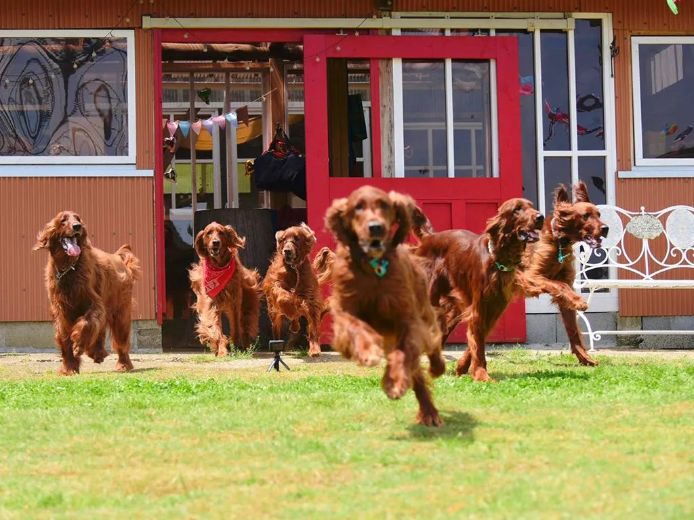
北関東で、犬の休日。｜ドッグラン5選
予約制のプライベートドッグラン。個人利用と団体利用のプランがあり、犬の性格や人数に合わせて選べます。
特集を読む →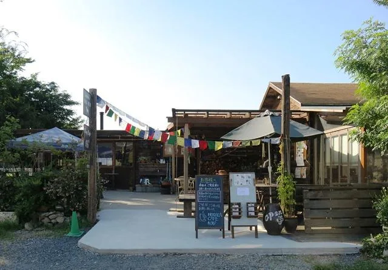
埼玉で、のびのび遊ぶ。｜ドッグラン5選
小型犬エリアと全犬種エリアに分かれたラン。併設カフェの犬同伴エリアで、遊んだあとの休憩もできます。
特集を読む →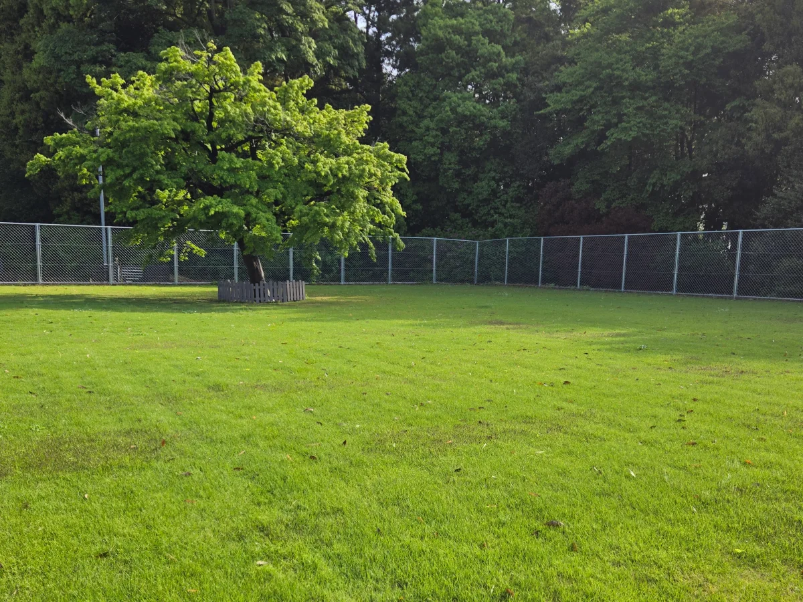
千葉のランへ、出かけよう。｜ドッグラン5選
600㎡・200㎡の2つの貸切フィールド。家族や友達だけで使えるので、ほかの犬との距離が気になる子の候補にも。
特集を読む →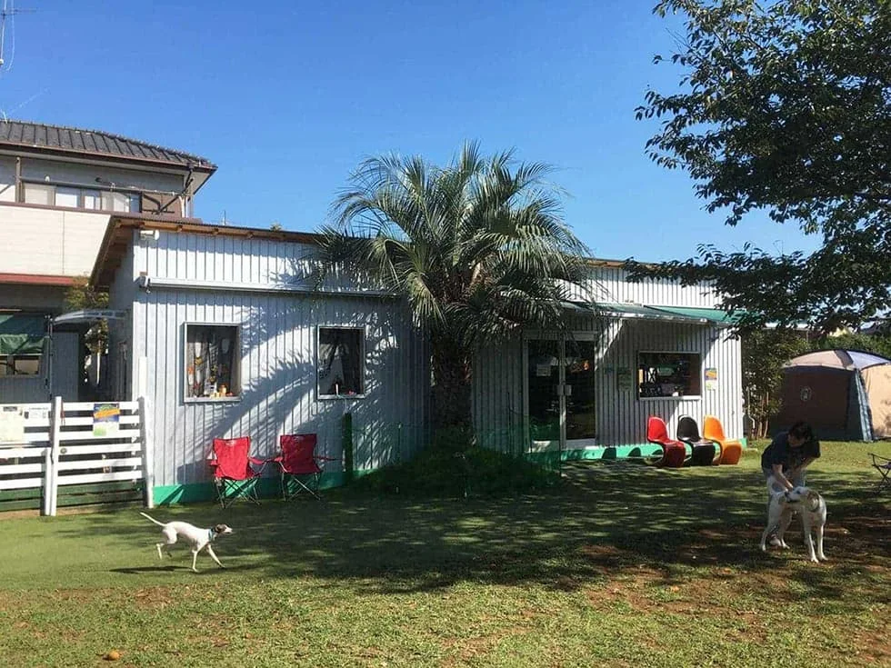
神奈川で、犬と遊ぼう。｜ドッグラン5選
芝生の屋外ランと、犬のグッズショップを併設。木々のあるフィールドで、いつもの散歩に遊ぶ時間を足したい日に。
特集を読む →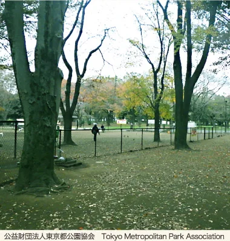
東京で、ひと走り。｜ドッグラン5選
ユーカリ広場の西側にあるラン。体格別の区画に加えてプレイエリアがあり、おもちゃで遊びたいときにも候補になります。使える区画と当日のルールを先に確認しておくとスムーズ。
特集を読む →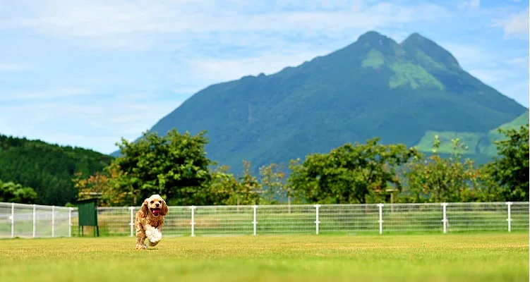
湯布院ガーデンホテル｜愛犬と泊まる客室・備品・アクセス
大型・中型・小型犬に分かれたドッグラン。泊まって、遊んで、愛犬のペースで過ごす休日に。
特集を読む →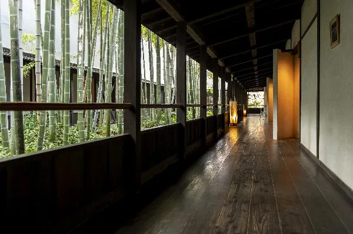
狗の郷｜愛犬と泊まる客室・備品・アクセス
全室に露天風呂を備え、犬と客室やレストランで過ごせる宿。専用ラン付き客室など、部屋ごとの違いも見比べて。
特集を読む →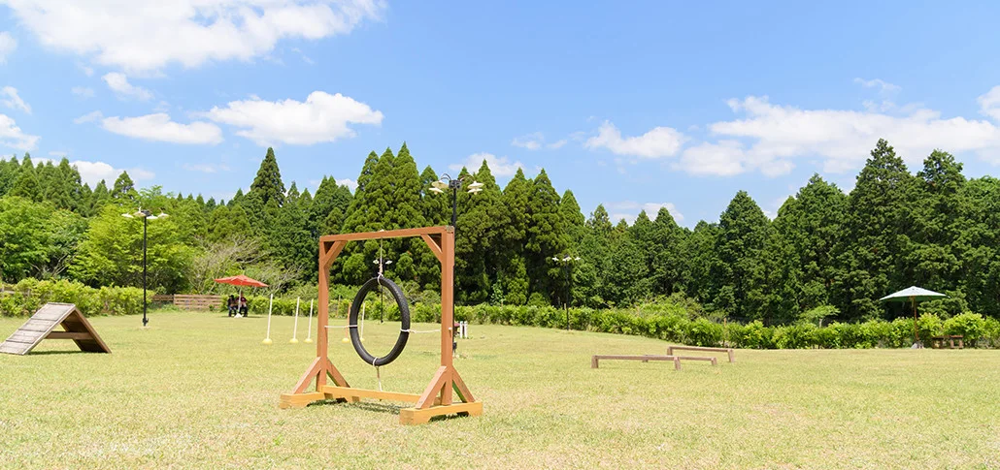
御宿 小笠原｜愛犬と泊まる客室・備品・アクセス
犬と泊まれる天然温泉付きの離れ。犬用の足洗い場やドッグランも備え、阿蘇での滞在をゆっくり楽しむ候補に。
特集を読む →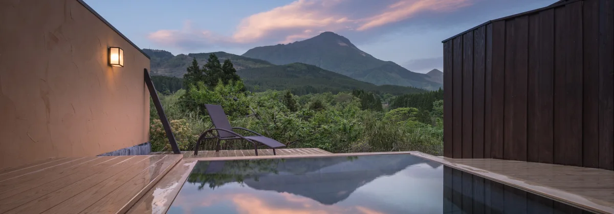
湯富里の宿 一壷天｜愛犬と泊まる客室・備品・アクセス
半露天風呂付きの離れで過ごす宿。犬同伴を予約時に申告。夕食は犬と一緒に専用の個室で楽しめます。
特集を読む →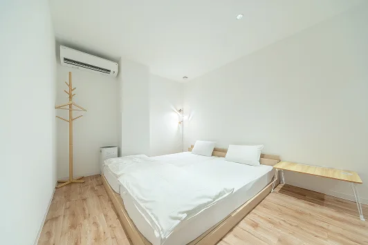
コインズホステル天神｜愛犬と泊まる客室・備品・アクセス
公式の室料目安。2人で使えば1人8,000円〜の計算。天神で食事や街歩きを楽しむ旅に。
特集を読む →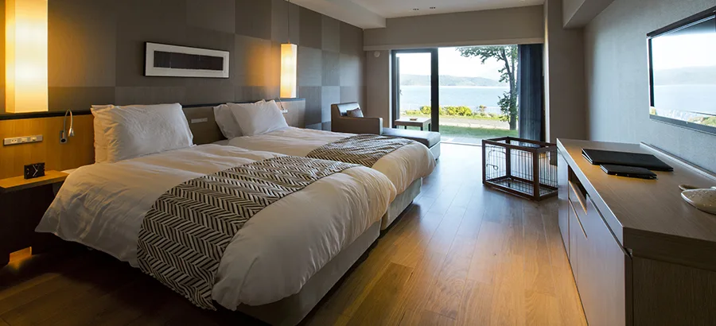
ザ レイクビュー TOYA 乃の風リゾート｜愛犬と泊まる客室・備品・アクセス
スパリゾート館に犬同伴用の客室を用意。通常客室とは予約条件が異なるため、ワンちゃんルームを指定して予約を。
特集を読む →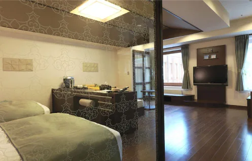
定山渓 鶴雅リゾートスパ 森の謌｜愛犬と泊まる客室・備品・アクセス
ドッグガーデン付きのワンちゃんルームを用意。10kgまで・2頭まで。犬は指定客室で過ごす条件で、レストラン同伴は不可。
特集を読む →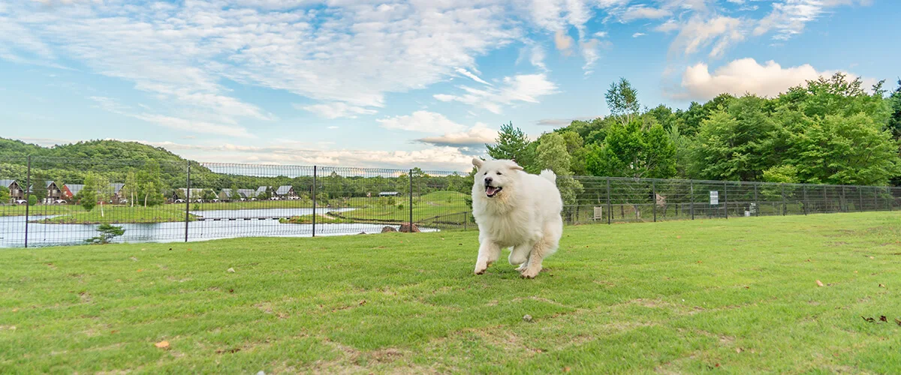
エンゼルフォレスト白河高原｜愛犬と泊まる客室・備品・アクセス
小・中型犬用や大型犬優先の屋外ランに、屋内ランも。愛犬に合った場所を選びながら過ごせます。
特集を読む →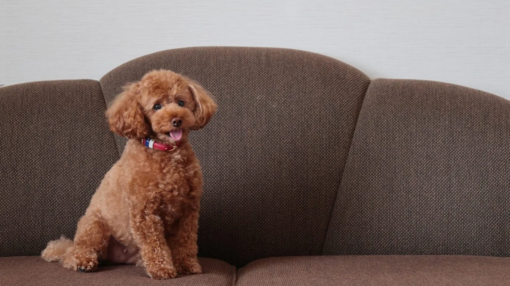
札幌パークホテル｜愛犬と泊まる客室・備品・アクセス
税・サービス料込みの公式表示。31㎡のパークビュー客室で、愛犬と札幌に滞在できます。
特集を読む →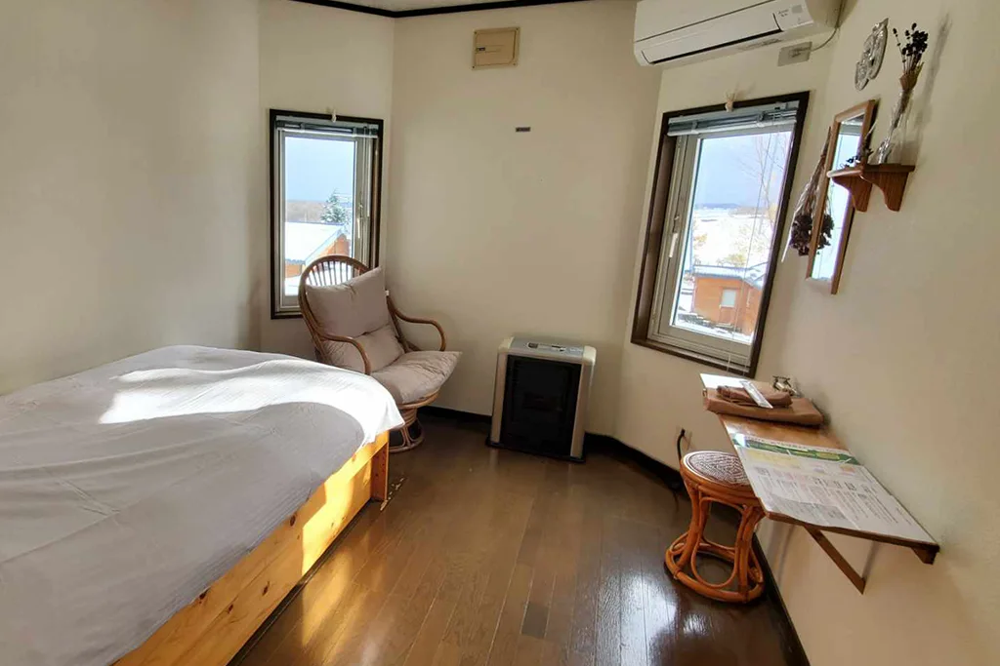
ペンションジャガタラ｜愛犬と泊まる客室・備品・アクセス
日本語公式料金表の2名1室利用時・税込料金。美瑛の丘で過ごす、シンプルなお泊まり候補。
特集を読む →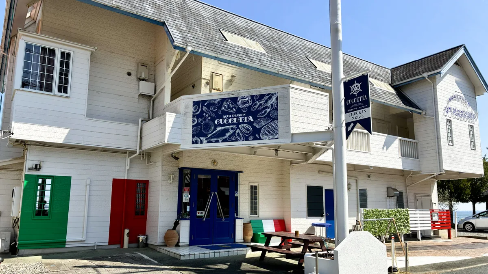
アクアペンション クッチェッタ｜愛犬と泊まる客室・備品・アクセス
全客室とレストランで犬同伴可。大型犬まで・1室3頭までの案内です。湖畔の滞在を楽しむ候補に。
特集を読む →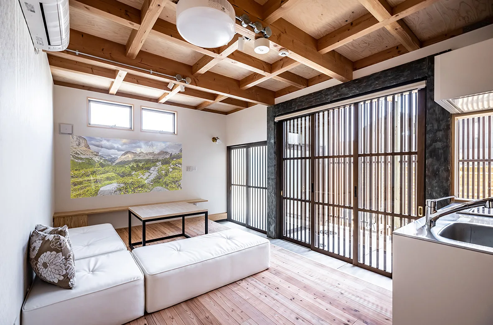
日本色｜愛犬と泊まる客室・備品・アクセス
用宗の一棟貸しの宿。犬同伴は青藍など対象棟に限定されるため、必ず犬連れ用の棟を指定して予約してください。
特集を読む →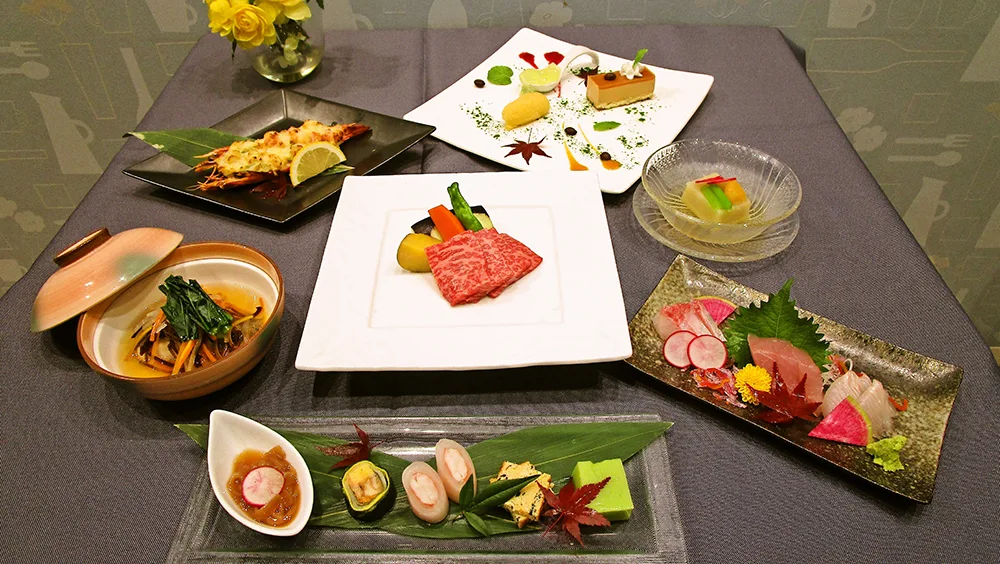
ホテル旬香 伊勢志摩リゾート｜愛犬と泊まる客室・備品・アクセス
松阪牛メインのフルコースや海鮮料理など、食事で選ぶ楽しみがある宿。愛犬用ごはんの用意も。
特集を読む →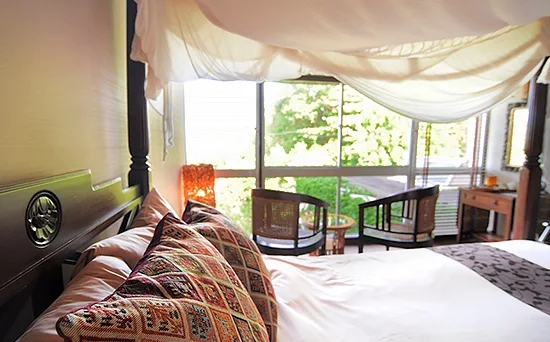
ホテル四季の蔵｜愛犬と泊まる客室・備品・アクセス
本館はアジアンテイストの空間。 ダブル・ツイン・和洋室など、 人数や好みに合わせて部屋を選べます。
特集を読む →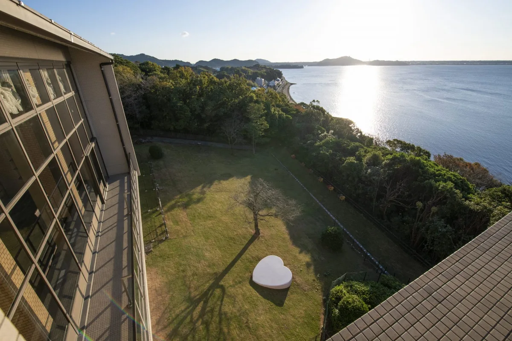
THE SCENE hamanako｜愛犬と泊まる客室・備品・アクセス
窓の外の浜名湖を眺めながら過ごす宿。 客室の広さや位置を見比べて、 旅の過ごし方に合う部屋を選びたい。
特集を読む →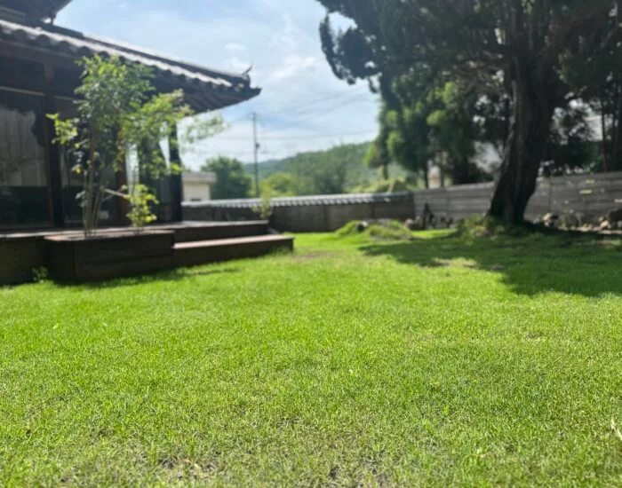
淡路と犬と宿｜愛犬と泊まる客室・備品・アクセス
海の近くの一棟貸しで、愛犬のペースに合わせる旅。敷地のドッグランで自由な時間を過ごせます。
特集を読む →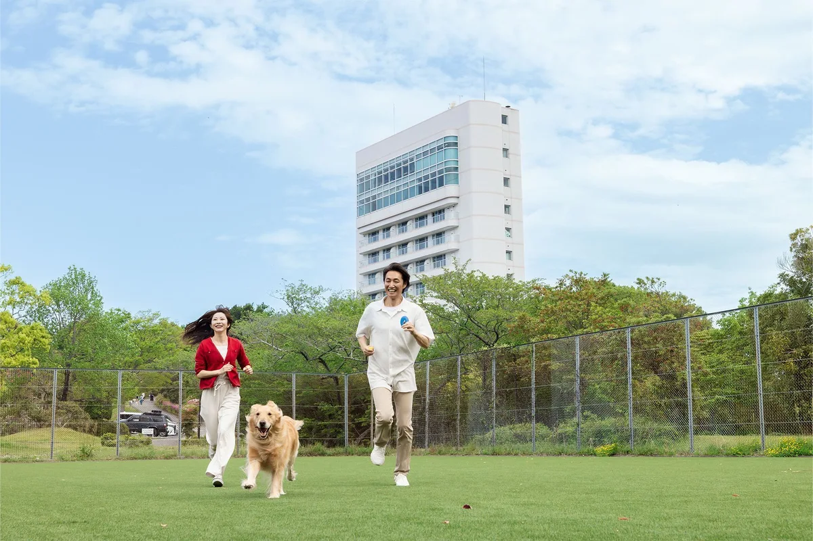
わんわんパラダイス プレミア 南紀白浜｜愛犬と泊まる客室・備品・アクセス
ホテル棟とヴィラの2つの滞在スタイル。眺望やプライベート感など、希望する過ごし方に合う客室を選んで。
特集を読む →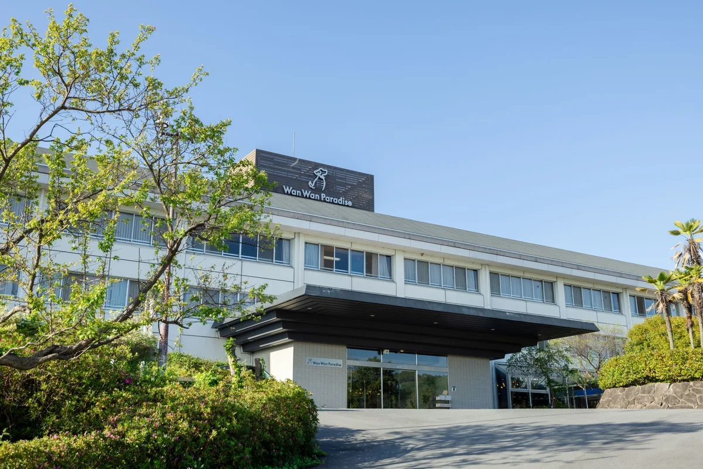
わんわんパラダイス 奈良生駒｜愛犬と泊まる客室・備品・アクセス
生駒山の自然を感じる犬連れの宿。ドッグランと館内での時間を楽しみながら、奈良方面への旅を考えたいときに。
特集を読む →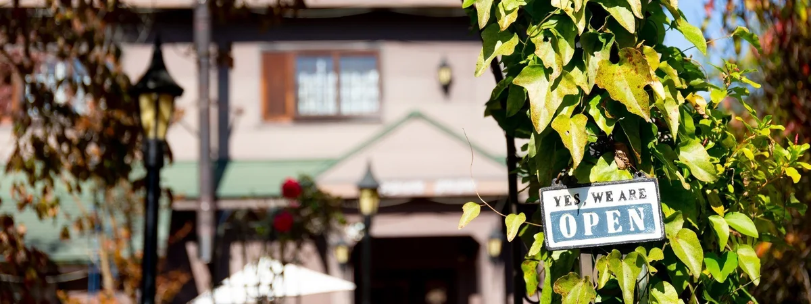
ペンション GUZU｜愛犬と泊まる客室・備品・アクセス
スイートタイプやコテージのある宿。小型犬向けで、中型犬は事前相談・大型犬は不可。中学生以下は利用できません。
特集を読む →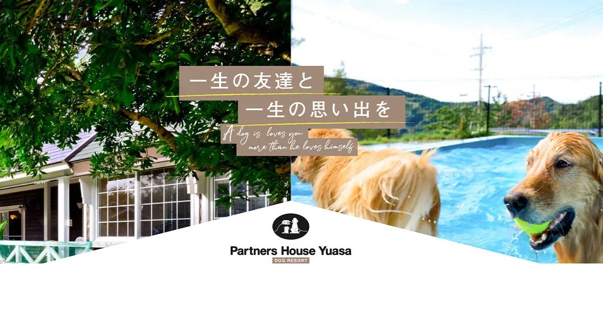
パートナーズハウスゆあさ｜愛犬と泊まる客室・備品・アクセス
ドッグランや犬用プールを備えた宿。館内レストランもあり、犬との遊びを中心に旅を組みたいときの候補に。
特集を読む →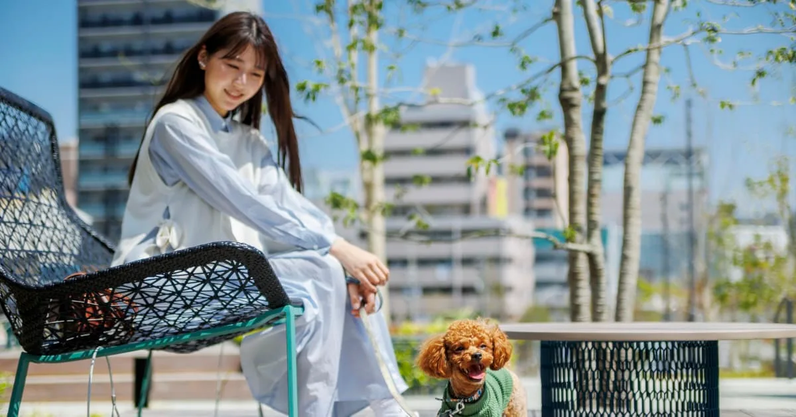
OMO7大阪 by 星野リゾート｜愛犬と泊まる客室・備品・アクセス
愛犬同伴の専用客室を用意。大阪観光と、ホテルでのんびりする時間を組み合わせたい人に。
特集を読む →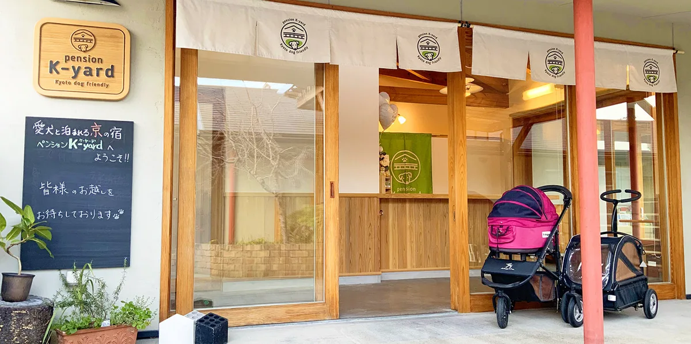
ペンションK-yard｜愛犬と泊まる客室・備品・アクセス
2名以上で1室利用時の大人料金。全室ミニキッチン付きで、食事を自由に組み立てたい旅に。
特集を読む →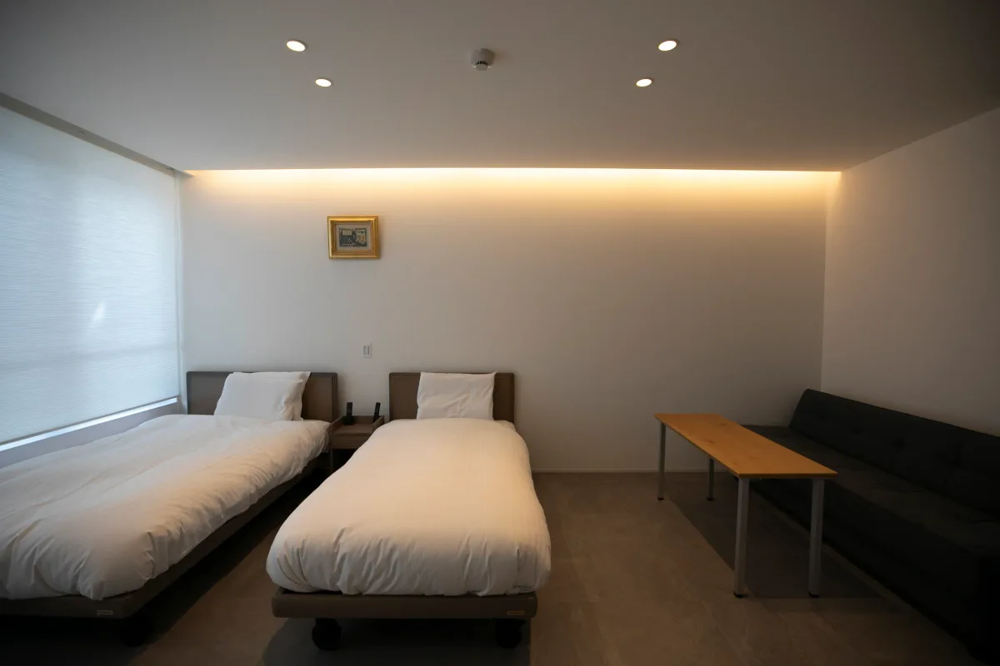
ホテルトーイン京都｜愛犬と泊まる客室・備品・アクセス
京都駅から徒歩約8分。全2室の小さな宿で、犬のお預かりサービスも案内。利用時間・頭数には条件があります。
特集を読む →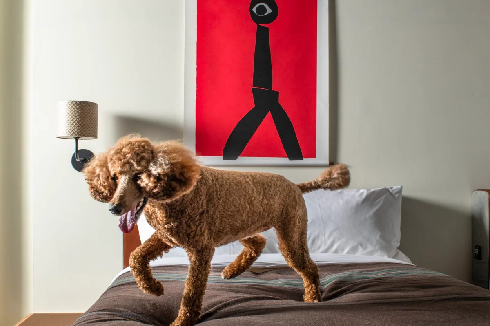
エースホテル京都｜愛犬と泊まる客室・備品・アクセス
犬同伴に対応する京都のホテル。犬の追加宿泊料があるため、予約時に同伴を申告し、対象客室と条件を確認して。
特集を読む →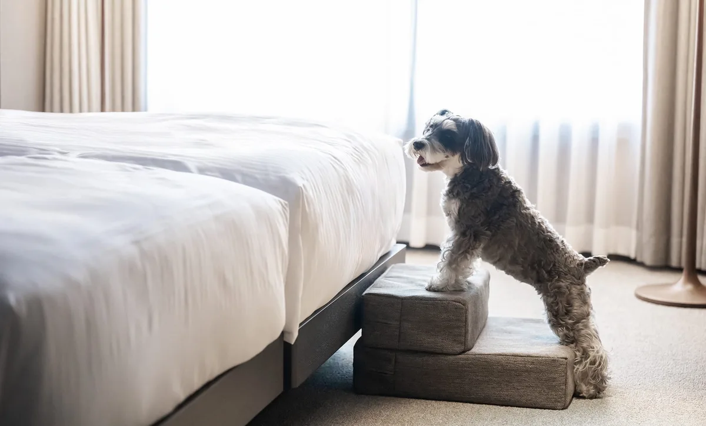
hotel anddoggy 京都二条｜愛犬と泊まる客室・備品・アクセス
全客室に犬用ベッドステップを設置。都市型ホテルで、犬と一緒に京都滞在を楽しみたい人に。対象は30kg未満・2頭まで。
特集を読む →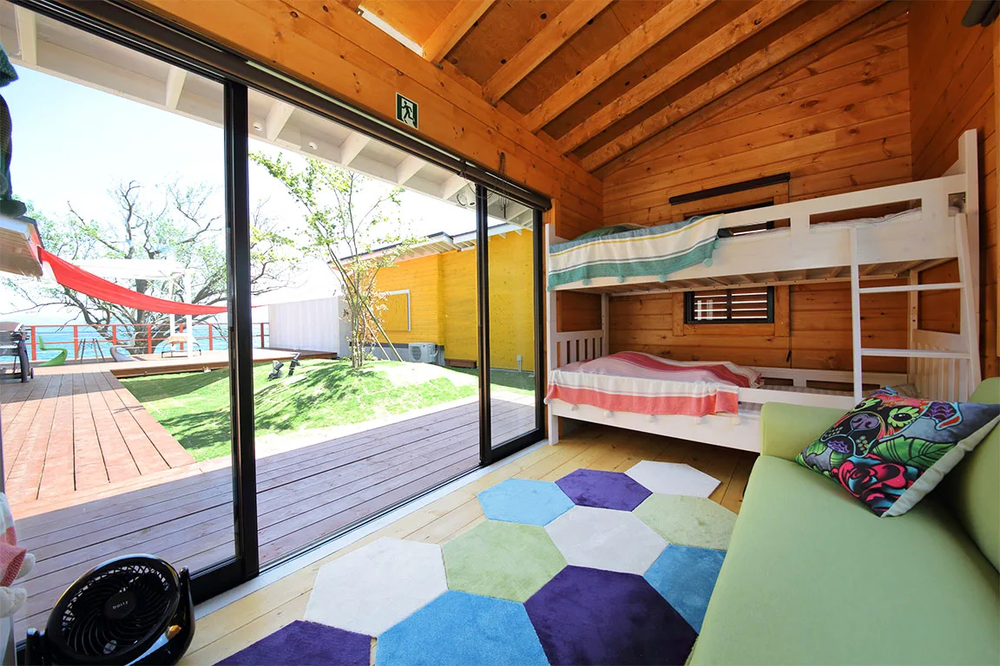
ドッググランピング京都天橋立｜愛犬と泊まる客室・備品・アクセス
犬連れ専用のグランピング。専用ドッグランと飼い主用の天然温泉露天風呂がある客室を、予約画面で確認して選べます。
特集を読む →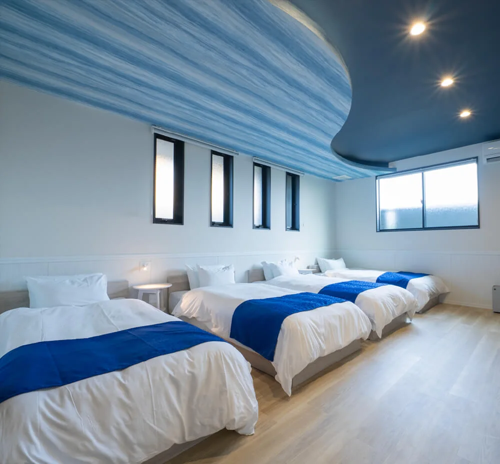
LAKE villa CHITOSE｜愛犬と泊まる客室・備品・アクセス
公式が全客室のベッド同伴を案内。 夜も普段のように一緒に過ごしたい 家族に気になる一棟貸しです。
特集を読む →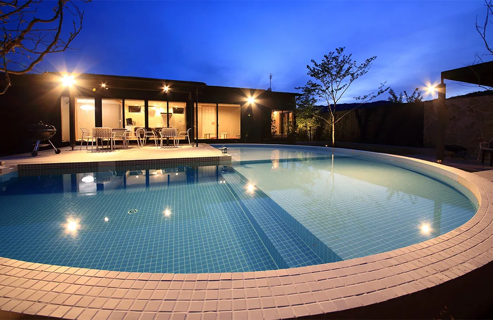
瑠璃浜｜愛犬と泊まる客室・備品・アクセス
「瑠璃浜」の一部、GRANDE、 calmato リードが愛犬同伴の対象。 施設名だけでなく、棟名まで選んで予約を。
特集を読む →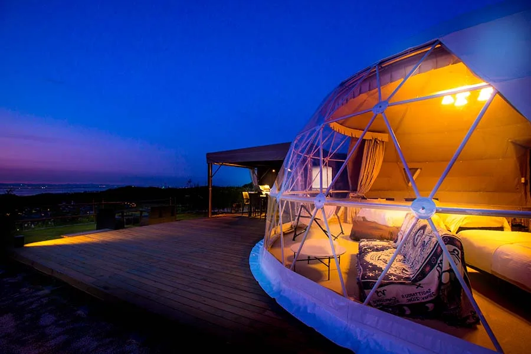
SKYDOME阪南｜愛犬と泊まる客室・備品・アクセス
犬同伴は専用ドッグラン付きの対象テントで。冷暖房のある独立した空間で、犬とのグランピングを楽しむ候補に。
特集を読む →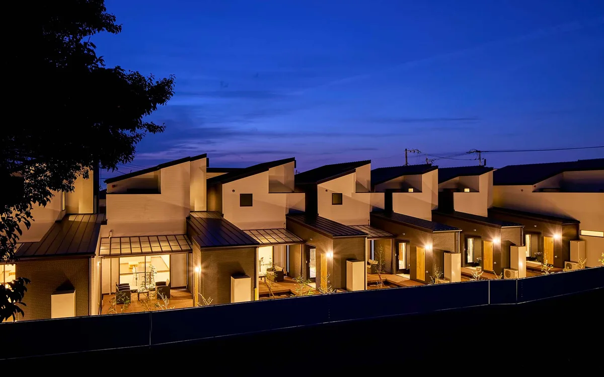
泉佐野can more GlampingResort｜愛犬と泊まる客室・備品・アクセス
約40㎡のプライベートガーデンを ドッグランとして使える宿。 屋根付きテラスで食事も楽しめます。
特集を読む →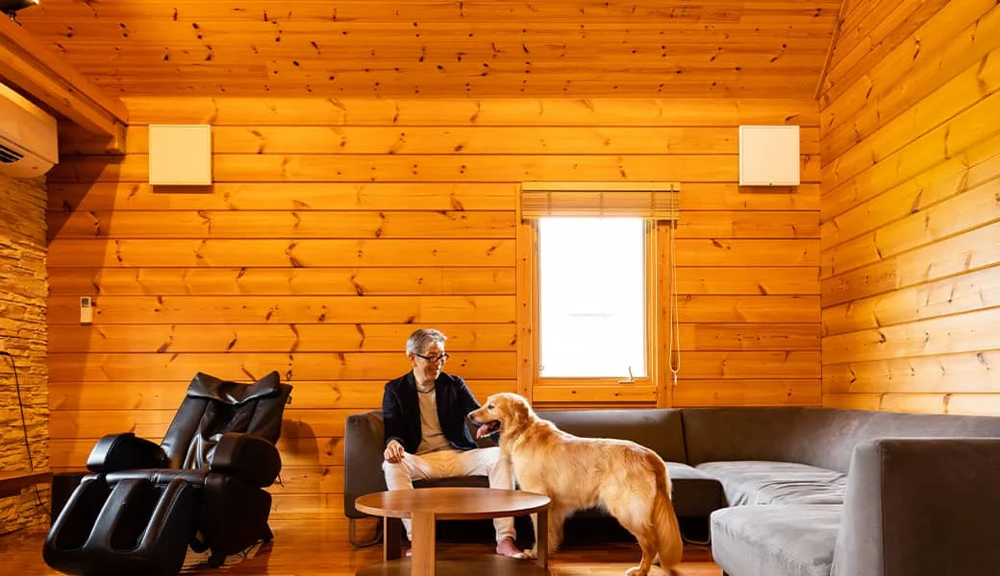
ベルナティオ わんちゃんコテージ カーネリア｜愛犬と泊まる客室・備品・アクセス
プレミアム・コモは専用ドッグラン付き。ナトゥーラは共用ランを利用するタイプ。庭の冬季営業条件も確認を。
特集を読む →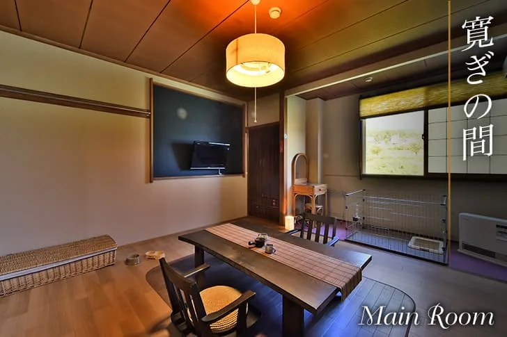
お宿 本屋敷｜愛犬と泊まる客室・備品・アクセス
戸狩温泉にある犬連れの宿。公式では全犬種・頭数制限なしの案内。室内ドッグラン道場もあり、雨の日の遊び場にも。
特集を読む →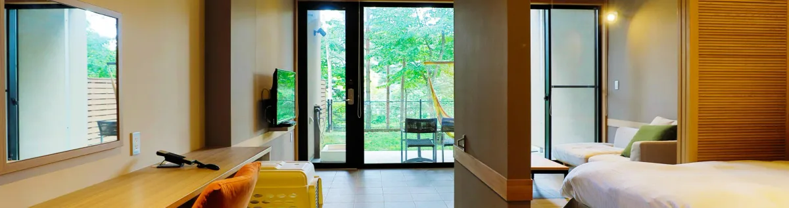
レジーナリゾート軽井沢御影用水｜愛犬と泊まる客室・備品・アクセス
しなの鉄道の駅から、ホテルの送迎を利用。御影用水沿いを愛犬とゆっくり歩く休日に。
特集を読む →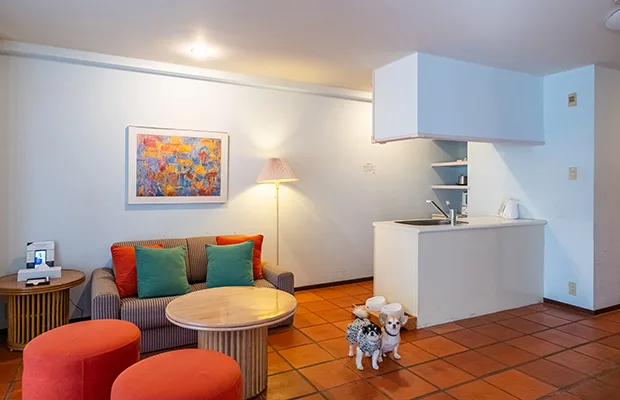
フジプレミアムリゾート｜愛犬と泊まる客室・備品・アクセス
「わんの宿」は犬と泊まれる客室。 犬用ベッドやトイレ用品などを備えています。 写真は客室例で、部屋により異なります。
特集を読む →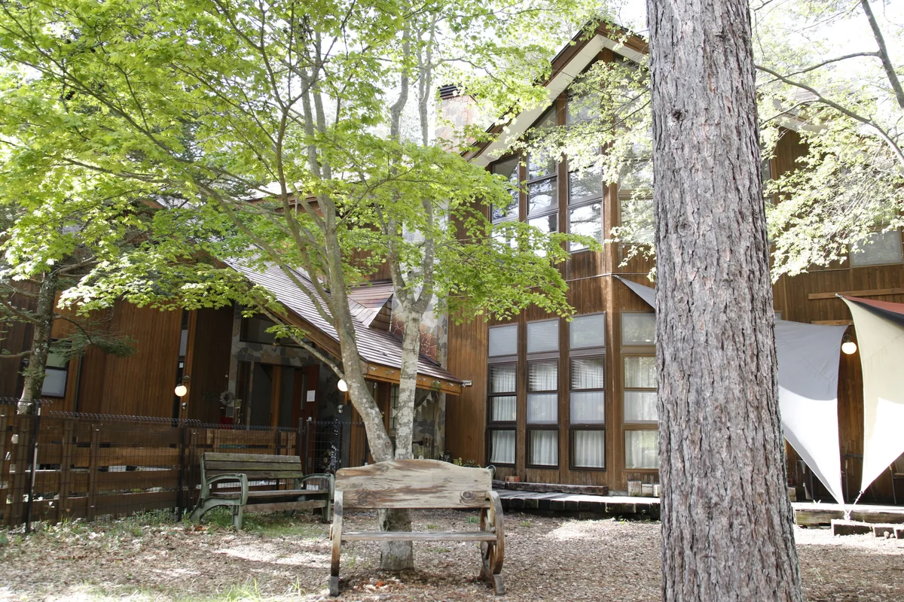
Vacation Pocoapoco｜愛犬と泊まる客室・備品・アクセス
以前のペンションを一棟で利用する宿。 3つの寝室それぞれにトイレ・洗面があり、 複数家族での旅行にも気になる一軒。
特集を読む →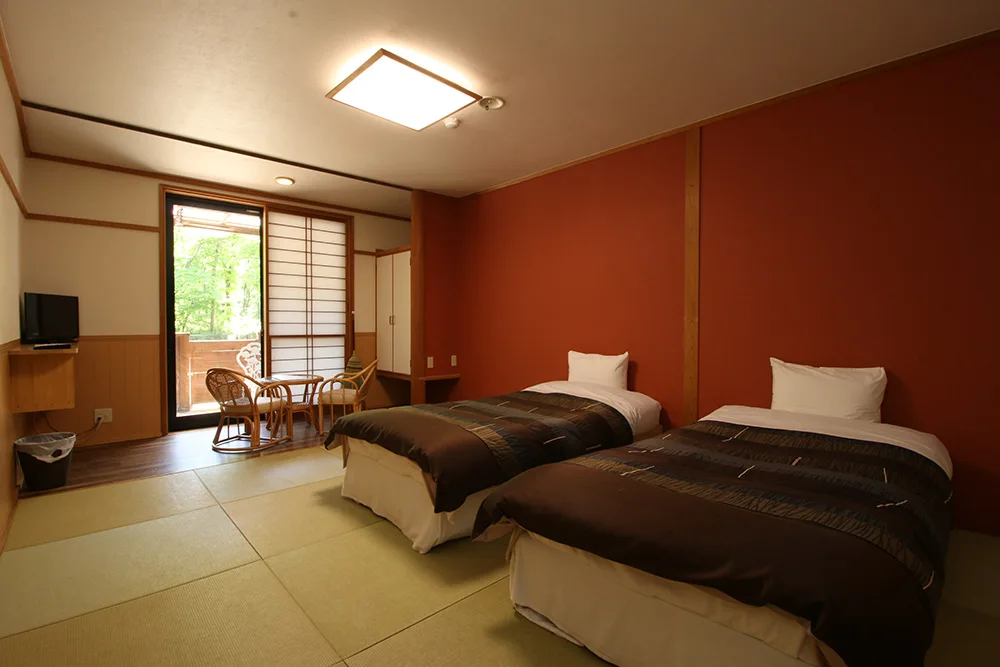
pension furari｜愛犬と泊まる客室・備品・アクセス
天然温泉とドッグランのある小さな宿。大きなホテルとは違う落ち着いた滞在を、那須で探したいときに。
特集を読む →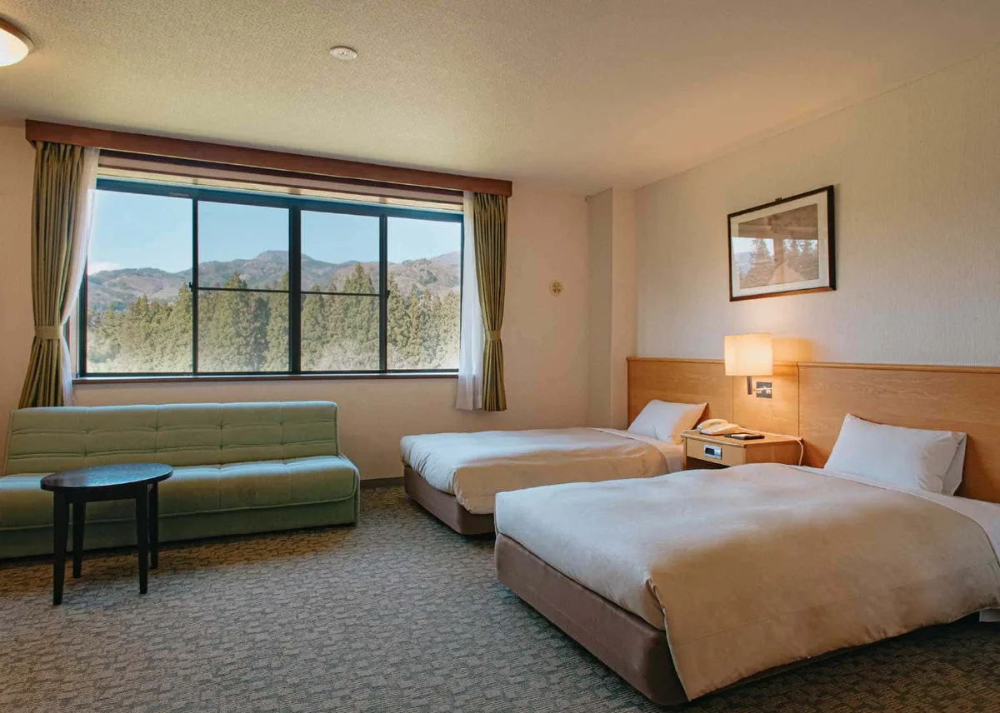
KARENみなかみ たくみの里 with Dog｜愛犬と泊まる客室・備品・アクセス
ドッグランやフォトブースを備える犬連れの宿。宿泊休業日は全館休業の案内があるため、営業カレンダーを確認して予約を。
特集を読む →きぬ川国際ホテル｜愛犬と泊まる客室・備品・アクセス
犬と同室で泊まれる鬼怒川温泉の宿。屋内ドッグランやペット専用露天風呂など、館内で過ごす候補もあります。
特集を読む →だいこく館｜愛犬と泊まる客室・備品・アクセス
犬と同室で過ごせる水上温泉の宿。布団はチェックイン前から用意されるスタイル。温泉街のお散歩も旅の楽しみに。
特集を読む →ホテルラフォーレ那須 ドッグコテージ｜愛犬と泊まる客室・備品・アクセス
リビングと寝室のあるコテージで、 家族とゆったり過ごす高原の休日。 客室タイプによって内装が異なります。
特集を読む →わんSHIP｜愛犬と泊まる客室・備品・アクセス
全2棟の貸別荘。庭付きの一棟を借りて、 ほかの宿泊客と空間を共有せずに 愛犬との休日を過ごせます。
特集を読む →PFリゾート・シエル｜愛犬と泊まる客室・備品・アクセス
犬同伴で使える海辺の貸別荘。キッチンやテラス、犬用の温水シャワーを備え、自分たちのペースで過ごせます。
特集を読む →シーグラス白浜｜愛犬と泊まる客室・備品・アクセス
犬と泊まれるコテージを指定して予約。SEAGLASS 3rdには芝生の庭とBBQデッキがあり、海辺でのんびりしたい日に。
特集を読む →箱根わんこ亭ゆにわ｜愛犬と泊まる客室・備品・アクセス
小型犬と過ごすコンドミニアム。部屋ごとに色や雰囲気が異なり、受入頭数も違います。予約時に犬種と頭数を連絡。
特集を読む →仙石高原 大箱根一の湯｜愛犬と泊まる客室・備品・アクセス
一の湯グループで犬連れを受け入れる宿。和室・洋室・和洋室から、人数と過ごし方に合うお部屋を選べます。
特集を読む →箱根強羅グアムドッグ本店｜愛犬と泊まる客室・備品・アクセス
館内だけでなく、屋外で過ごす時間も。 ドッグランには飼い主向けの足湯があり、 愛犬を見守りながらひと休みできます。
特集を読む →七沢荘｜愛犬と泊まる客室・備品・アクセス
犬同伴プランのある七沢温泉の宿。対象客室を選んで予約。館内の移動は顔が出ないキャリーを使う条件です。
特集を読む →モリトソラ箱根｜愛犬と泊まる客室・備品・アクセス
全室に温泉風呂とプライベートドッグラン。部屋食で犬と一緒に過ごせる宿。頭数の条件は客室タイプごとに確認を。
特集を読む →シェラトン・グランデ トーキョーベイ・ホテル｜愛犬と泊まる客室・備品・アクセス
指定のドッグフレンドリールームで宿泊。専用ラウンジや犬用メニューがあり、お部屋でゆっくり過ごしたい日に。
特集を読む →ザ・ペニンシュラ東京｜愛犬と泊まる客室・備品・アクセス
犬同伴はスイートルーム限定。15kg以下の犬1頭まで。犬用アメニティがあり、街歩きとホテル時間を楽しむ候補に。
特集を読む →日帰りで遊ぼう、関東ドッグラン10選。
インスタ掲載の関東のドッグラン10施設。屋内・屋外、サイズ別エリア、初回登録や持ち物を確認。
特集を読む →愛犬と泊まる、大阪の宿10選。
インスタ掲載の大阪の宿10軒。犬同伴プラン、体格・頭数、人用ベッドと添い寝の条件を確認。
特集を読む →東京で、愛犬とホテルステイ。犬と泊まれる宿10選。
犬同伴客室・添い寝・食事中の過ごし方を、公式情報で確認する10軒。
特集を読む →神奈川で、愛犬とホテルステイ。犬と泊まれる宿10選。
犬同伴客室・添い寝・食事中の過ごし方を、公式情報で確認する10軒。
特集を読む →ごはんの時間も、一緒に。東京・神奈川の犬と食事できるお店10選。
店内同伴・テラス限定を分けて確認。犬用メニューやカートの条件も。
特集を読む →街泊も、箱根の休日も。東京・神奈川の犬と泊まる宿10選。
都心のホテルと箱根の宿を、犬の受入条件・添い寝・過ごし方で比較。
特集を読む →たっぷり走って、そのままお泊まり。関東のラン付き宿10選。
共用ランと専用のお庭、屋内と屋外。遊び方から選ぶ関東の宿。
特集を読む →少し特別な休日を。関東の犬と泊まる宿・ヴィラ10選。
温泉、海辺、専用のお庭。設備と犬同伴範囲を確かめて選ぶ10軒。
特集を読む →湖と島で、ゆっくり。関西の犬と過ごす宿・ヴィラ10選。
滋賀・京都・兵庫で、専用ランや食事の時間を楽しむ宿を比較。
特集を読む →海を眺めるお泊まり。東海の犬と泊まる宿10選。
伊豆・南知多・鳥羽へ。海の見える客室と犬連れの条件を確認。
特集を読む →水遊びの旅を計画しよう。関東・甲信の犬用プールがある宿10選。
通年型・夏季限定・対象プラン限定を分けて、次の水遊び旅行を計画。
特集を読む →湖と森で過ごす、北海道の犬と泊まる宿5選。
定山渓・支笏湖・サロマ湖・阿寒湖・丸瀬布。犬同伴客室と添い寝条件を比較。
特集を読む →温泉旅を、愛犬と。九州の犬と泊まる宿5選。
湯布院・阿蘇・菊池・島原。食事の同伴範囲と寝具の条件から選ぶ温泉宿。
特集を読む →泊まる前に、遊びに行こう。日帰りで使えるホテルのドッグラン5選。
那須・千葉・滋賀へ。宿泊しなくても楽しめるランとカフェを紹介。
特集を読む →走って、休んで、また遊ぼう。関西の日帰りドッグラン5選。
大阪・滋賀で、屋根・犬のサイズ区分・事前登録を確認して遊びに行く。
特集を読む →今年のお祝いは、旅先で。愛犬の誕生日を祝える宿10選。
犬用ケーキ、お祝いプラン、うちの子記念日の特典。申込期限と添い寝の条件を比べる、全国の記念日ステイ10選。
特集を読む →気軽に、愛犬と一泊。予算を比べて選ぶ宿10選。
素泊まりから2食付きまで、公式料金を比べる犬連れの宿10選。犬料金・季節加算・添い寝の可否も一緒に確認。
特集を読む →愛犬と、お風呂のある旅へ。犬用浴槽がある宿10選。
客室の犬用浴槽、貸切風呂、犬専用温泉を比較する10選。人と同じ浴槽かどうか、添い寝の可否も分けて確認。
特集を読む →おやすみも、一緒に。愛犬と添い寝できる宿10選。
ベッドや布団で一緒に眠れる公式案内がある10軒。マナーウェアや対象客室など、寝具の条件まで確認する宿選び。
特集を読む →お庭をひとりじめ。専用ドッグラン付きの宿10選。
ほかの犬と共有しない庭で遊ぶ10軒。全棟付きか対象客室のみか、庭の広さと添い寝の条件も比べます。
特集を読む →ごはんの時間も、一緒がいい。愛犬と食事できる宿10選。
部屋食、個室、犬同伴レストランを比べる10選。犬を部屋に残さず食事を楽しむために、夕朝食の場所と添い寝を確認。
特集を読む →みんなで、お泊まり。多頭で泊まる宿10選。
2頭以上の家族に。頭数上限・体重区分・追加料金と添い寝を見比べる、全国の多頭向けステイ10選。
特集を読む →大きなきみと、旅へ。大型犬と泊まる宿10選。
大型犬を受入れるホテル・コテージ・ヴィラ10選。体格に合う客室、ラン、寝床と添い寝の条件を比べます。
特集を読む →雨の日も、楽しい宿。屋内・屋根付きランのある宿10選。
北海道から鳥取まで、館内や屋根の下で遊べる犬連れの宿10選。屋内と屋根付きの違い、添い寝の条件も確認。
特集を読む →家族のペースで、旅をする。愛犬と泊まるコテージ・ヴィラ10選。
森のコテージから海辺の貸別荘まで10軒。キッチン、専用ラン、階段と添い寝の条件を比べる犬連れの一棟泊。
特集を読む →愛犬と、星空の休日。犬と泊まるグランピング10選。
ドーム、キャビン、テントを比べる犬連れグランピング10選。冷暖房や食事の場所に加え、添い寝のルールも確認。
特集を読む →愛犬と、動物のいる風景へ。犬と行ける動物園・牧場5選
北海道・岩手・静岡・熊本から5施設。犬同伴で入れる範囲、ほかの動物との距離、食事と駐車場を比較します。
特集を読む →花を見ながら、ゆっくり歩く。愛犬と行くガーデン5選
北海道から九州まで、犬同伴の庭園・花畑を5か所。季節営業やマナーウェア、食事席の違いを整理しました。
特集を読む →顔まで隠れるカートは必要？愛犬と行くアウトレット5選
軽井沢・神戸三田・りんくう・滋賀竜王・鳥栖。店舗に入る条件と、食事・休憩を分けて比較する買い物特集です。
特集を読む →庭の時間を、わが家のペースで。関西の専用ラン付き宿5選
ほかの犬との交流を予定に入れず、専用ランで過ごしたい家族へ。既掲載の関西の宿から、客室と庭の条件を軸に5軒を選び直しました。
特集を読む →犬とのお出かけ、何を持っていく？忘れものを減らす準備帖。
荷物を増やすより、その日の行き先に合うものを。水や排泄用品に加えて、カートの条件や証明書まで確認するための準備帖です。
特集を読む →犬と初めてのカフェへ。席選びから、帰るタイミングまで。
犬同伴OKのお店でも、過ごしやすさは席や時間帯で変わります。初めての一回を短く、無理なく楽しむための確認ポイントをまとめました。
特集を読む →初めての犬連れお泊まり。予約前に見たい7つのこと。
ランがある、添い寝できる。それだけで決める前に、食事やお風呂の間の過ごし方も確認を。初めての宿選びを整理するガイドです。
特集を読む →ひとりと一匹のおでかけ。犬と離れずに過ごすための準備。
買い物や食事だけでなく、人のトイレまで。お留守番が難しい犬と出かけるときに、出発前に確認しておきたい動線をまとめます。
特集を読む →ふたり連れのおでかけ。多頭で行く日の段取り帖。
すいとおんのように、二頭一緒に出かけたい日。頭数制限、カートの条件、受付と食事を、一頭ずつ確認するための準備帖です。
特集を読む →初めての犬イベントへ。買い物も休憩も楽しむための準備。
気になるマルシェや犬種オフ会を見つけたら。チケット、参加条件、当日の過ごし方を、5つの段階で確認します。
特集を読む →愛犬と、海の世界へ。犬と行ける水族館5選
箱根・伊豆・鳥羽・高知の水族館を、顔出し・ケージ・食事・駐車場の条件で比較。犬と入れる範囲と雨の日の注意点を整理しました。
特集を読む →テラスじゃなくて、店内で。犬と入れるカフェ＆ごはん5選【関東】
東京・埼玉の店内同伴できる5店。カートの置き場、予約、駐車場、人のトイレまで、犬をひとりにできない日の食事選びを考えます。
特集を読む →広い庭園を、愛犬のペースで。北海道のおでかけ5選
北海道の5施設を、犬の同伴範囲・食事・カート・駐車場の注意点から比較。未訪問の候補を公式情報で整理。
特集を読む →公園も庭園も、一緒に。東北のおでかけ5選
東北の5施設を、犬の同伴範囲・食事・カート・駐車場の注意点から比較。未訪問の候補を公式情報で整理。
特集を読む →山の空気を、一緒に。甲信越のおでかけ5選
甲信越の5施設を、犬の同伴範囲・食事・カート・駐車場の注意点から比較。未訪問の候補を公式情報で整理。
特集を読む →海辺も花畑も。東海のおでかけ5選
東海の5施設を、犬の同伴範囲・食事・カート・駐車場の注意点から比較。未訪問の候補を公式情報で整理。
特集を読む →カートもごはんも確認。関西の犬連れショッピング5選
関西の5施設を、犬の同伴範囲・食事・カート・駐車場の注意点から比較。未訪問の候補を公式情報で整理。
特集を読む →花と高原でひと休み。中国地方のおでかけ5選
中国地方の5施設を、犬の同伴範囲・食事・カート・駐車場の注意点から比較。未訪問の候補を公式情報で整理。
特集を読む →公園から街歩きまで。九州のおでかけ5選
九州の5施設を、犬の同伴範囲・食事・カート・駐車場の注意点から比較。未訪問の候補を公式情報で整理。
特集を読む →犬と買い物、ごはんも一緒に。関東のショッピング施設5選
顔まで覆うカートは必要？ 食事・駐車場・トイレまで、犬と離れず過ごせる範囲を比較。
特集を読む →愛犬と泊まれる宿、関東10選。
ドッグランのある宿を、添い寝の条件・ひとり泊・部屋の過ごし方で比較。
特集を読む →愛犬と泊まれる宿、関西11選。
滋賀・京都・兵庫のラン付き宿11軒。添い寝条件を比較し、2026年10月開業予定の淡路島「翠音」も追加。
特集を読む →関東のドッグラン10選。
室内・屋根付き・天然芝・水遊び・無料。今日はどこで遊ぶ？
特集を読む →雨の日、おうちで何する？
すいとおん家のノーズワークと、いっしょに遊ぶアイデア。
特集を読む →関東の室内ドッグラン10選。
東京・神奈川・埼玉・茨城・群馬の10施設。料金・登録・予約を比べて選ぼう。
特集を読む →関東の利用無料ドッグラン10選。
都立共通登録の代表1か所に、海辺・道の駅・公園の9か所。登録の違いと別途費用も比較。
特集を読む →表紙は各特集のイメージイラストです。実在施設の外観・設備を描いたものではありません。
条件から、場所を探す。
日帰り135件＋お泊まり101件。記事を読まずに探したいときは、ここから。
訪問した施設は「訪問しました」で区別しています。料金・登録方法は各施設の情報源へ。屋内と屋根付きは分けて掲載し、当日の営業・空き状況は公式で確認してください。